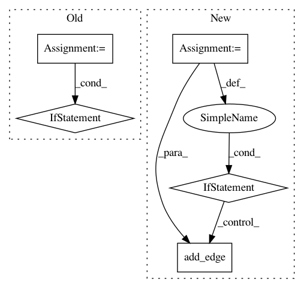

fabeffe39e70e1c371bcce158b3b8b0dd029e7a6,gensim/summarization/summarizer.py,,_set_graph_edge_weights,#Any#,74
Before Change
sentence_2 = documents[j]
edge_1 = (sentence_1, sentence_2)
edge_2 = (sentence_2, sentence_1)
if not graph.has_edge(edge_1):
graph.add_edge(edge_1, weights[i][j])
if not graph.has_edge(edge_2):
graph.add_edge(edge_2, weights[j][i])
// Handles the case in which all similarities are zero.
// The resultant summary will consist of random sentences.
if all(graph.edge_weight(edge) == 0 for edge in graph.edges()):
_create_valid_graph(graph)
After Change
if i % 1000 == 0 and i > 0:
logger.info("PROGRESS: processing %s/%s doc (%s non zero elements)", i, len(documents), len(doc_bow))
for j, weight in doc_bow:
if i == j or weight < WEIGHT_THRESHOLD:
continue
edge = (documents[i], documents[j])
if not graph.has_edge(edge):
graph.add_edge(edge, weight)
// Handles the case in which all similarities are zero.
// The resultant summary will consist of random sentences.
if all(graph.edge_weight(edge) == 0 for edge in graph.iter_edges()):
_create_valid_graph(graph)
In pattern: SUPERPATTERN
Frequency: 3
Non-data size: 5
Instances
Project Name: RaRe-Technologies/gensim
Commit Name: fabeffe39e70e1c371bcce158b3b8b0dd029e7a6
Time: 2019-01-17
Author: __Singleton__@hackerdom.ru
File Name: gensim/summarization/summarizer.py
Class Name:
Method Name: _set_graph_edge_weights
Project Name: vatlab/SoS
Commit Name: ff5bbede0431e5296811dc57432a33a9a68942d0
Time: 2016-09-22
Author: ben.bog@gmail.com
File Name: pysos/dag.py
Class Name: SoS_DAG
Method Name: build
Project Name: RaRe-Technologies/gensim
Commit Name: fabeffe39e70e1c371bcce158b3b8b0dd029e7a6
Time: 2019-01-17
Author: __Singleton__@hackerdom.ru
File Name: gensim/summarization/summarizer.py
Class Name:
Method Name: _set_graph_edge_weights
Project Name: RaRe-Technologies/gensim
Commit Name: ac7486a69da6ce5d9873216bad86afa1a10191fc
Time: 2015-05-03
Author: fbarrios@fi.uba.ar
File Name: gensim/summarization/summarizer.py
Class Name:
Method Name: _set_graph_edge_weights